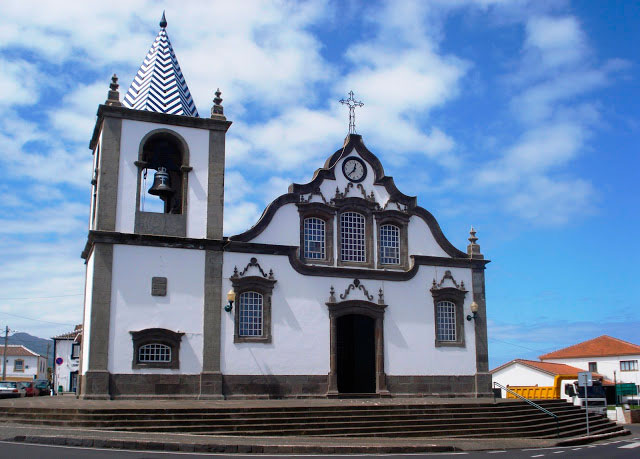

Marianna Josefa
1804
Lajes – Conselho da Praia da Vitória – Ilha Terceira
Cidade e baía da Praia da Vitória.
Fonte: www.skyscrapercity.com
Foi na Freguesia de Lajes Conselho da Praia da Vitória, na Ilha Terceira, que nasceu em 20 de Janeiro de 1804 Marianna Josefa, filha de Manoel Gomes e Maria Josefa.
Foi batizada em 26 de janeiro. Foram seus padrinhos Manoel Gomes Canhoto e Anna Joaquina. Em sua certidão não está mencionada a avó materna, mas conseguimos pesquisando a certidão de casamento de seu irmão Francisco.
Inventário Genealógico do Centro de Conhecimento dos Açores / Portal Cultura Açores
Registro de Batismo de Mariana Josefa
Marianna filha legma de Manoel Gomes e sua mer Maria Josefa ambos naturais e fregueses desta Pral Igra do Archanjo S. Miguel do Logar das Lagens. Netta Paterna de Manoel Gomes e de sua mer Bernarda Josefa de JESUS e Materna de Manoel Leal Cardoso e sua mer. Nasceo aos vinte dias do mês de Janro de mil outo centos e quatro annos e foi baptizada Nesta Sobredta Paral por mim Vgro da mma abaixo assignado aos vinte e seis dias do dto mes e anno. Forão padrinhos Manoel Gomes Canhoto e Anna Joaquina filha de Manoel Francisco e sua mer Maria de JESUS todos mers desta frega das Lagens. E para constar lancei este termo qual assigno. O Vgro Joaquim Antonio de Mendes.

Paroquia de São Miguel Arcanjo
Fonte www.skyscrapercity.com
A paróquia de São Miguel Arcanjo foi erguida em 1564, porém ao longo da história foi demolida por sucessivos terremotos.
Fonte: http://pt.wikipedia.org/wiki/Igreja_de_S%C3%A3o_Miguel_Arcanjo_%28Lajes%29
Os Pais
Manoel Gomes |
| Nascimento: 12/06/1740 Lages – Ilha Terceira |
| Batismo: |
| Padrinhos: |
| Filiação: Manoel Gomes e Bernarda de Jesus |
| Falecimento: 03/12/1809 Lages – Ilha Terceira |
Primeiro casamento com:
Emerenciana Rosa |
| Nascimento: |
| Casamento: em 07/01/1774 |
| Filiação: |
| Falecimento: |
Filhos:
|
Manoel |
| Nascimento: 04/03/1802 Lages – Ilha Terceira |
| Casamento: |
| Falecimento: |
Mariana |
| Nascimento: 07/11/1780 Lages – Ilha Terceira |
| Casamento: |
| Falecimento: |
Segundo casamento com:
|
Maria Josefa |
| Nascimento: 08/12/1772 Lajes – Ilha Terceira |
| Batismo: |
| Padrinhos: |
| Filiação: Manoel Leal Cardoso e Thomasia de Santo Antonio |
| Casamento: 25/06/1797 |
| Falecimento: 23/01/1841 Lajes – Ilha Terceira |
Filhos:
|
Francisco Gomes |
| Nascimento: 12/05/1798 Lages – Ilha Terceira |
| Batismo: |
| Padrinhos: |
| Casamento: 27/01/1834 com Maria Theodora (?-?) |
| Falecimento: |
| Filhos com Maria Theodora: 1.1 Anna (Praia da Vitoria – Ilha Terceira 31/07/1835-?) 1.2 Rosa (Praia da Vitoria – Ilha Terceira 22/02/1837-?) 1.3 Theodora (Praia da Vitoria – Ilha Terceira 1838-?) 1.4 Catharina (Praia da Vitoria – Ilha Terceira 01/12/1840-?) |
Maria |
| Nascimento: 16/05/1800 Lages – Ilha Terceira |
| Batismo: |
| Padrinhos: |
| Casamento: |
| Falecimento: |
Mariana Josefa |
| Nascimento: 20/01/1804 Lages - Ilha Terceira |
| Batismo: 26/01/1804 Paroquia do Arcanjo São Miguel |
| Padrinhos: Manoel Gomes e Anna Joaquina |
| Casamento: Primeiro casamento: 25/10/1840 com Francisco Pereira da Silva, filho de João Pereira da Silva e Izabel de Jesus Segundo Casamento: 03/05/1852 com Jose Nunes Esteves (?-16/08/1873) |
| Falecimento: 05/06/1853 Praia da Vitoria - Ilha Terceira |
O Casamento
Após o óbito de Francisco Pereira da Silva em 1851, Mariana Josefa se casou em segundas núpcias com Jose Nunes Esteves (?-16/08/1873), em 03/05/1852.
O Óbito
Em cinco de junho de 1853, Mariana Josefa faleceu na Vila da Praia da Vitória.
Inventário Genealógico do Centro de Conhecimento dos Açores / Portal Cultura Açores
Registro de Óbito de Mariana Josefa
Em os sinco dias do mes de Junho do anno de mil outo centos sincoenta e tres faleceo da vida presente com idade de quarenta e quatro annos pouco mais ou menos Marianna Josefa casada em segundas núpcias com Jose Nunes. Recebeu os Sacramentos do moribundo (?) fez testamento foi sepultada no Cemitério Geral desta Villa da Praia da Vitoria onde era moradora e para que assim conste faço este termo que assigno no mesmo dia mes e anno supra.